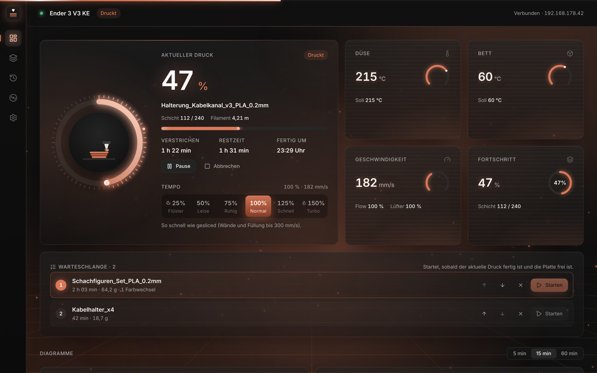
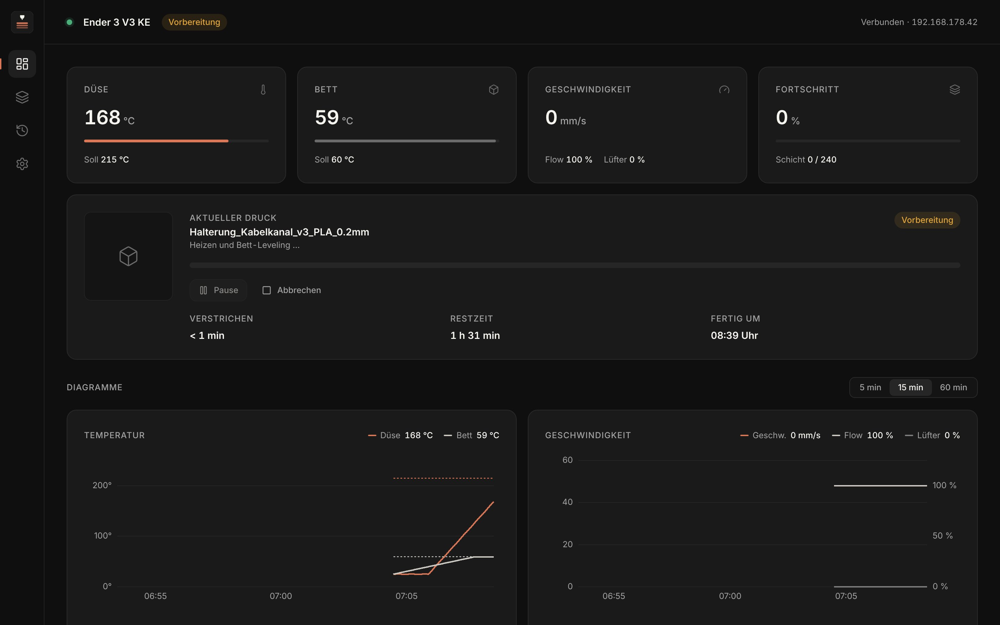
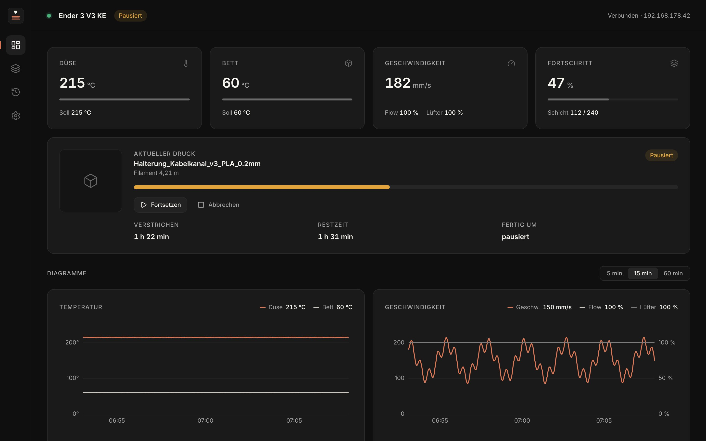
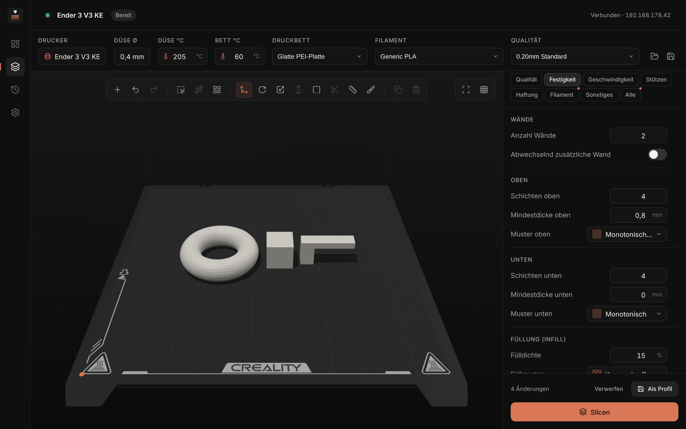
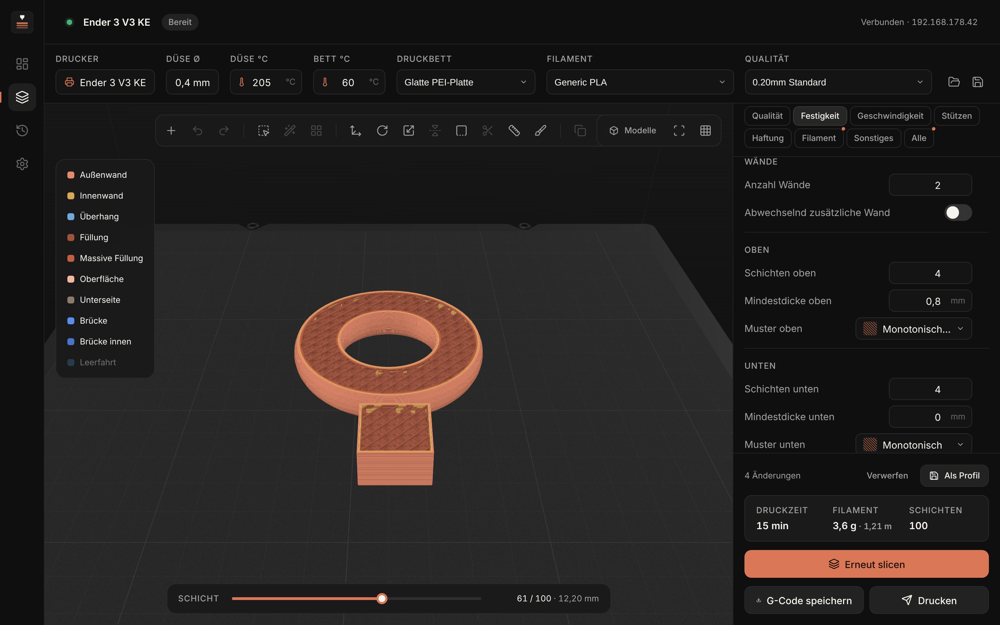
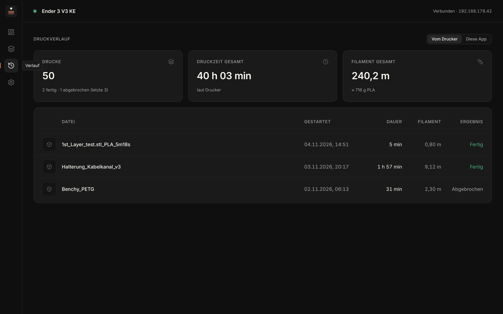
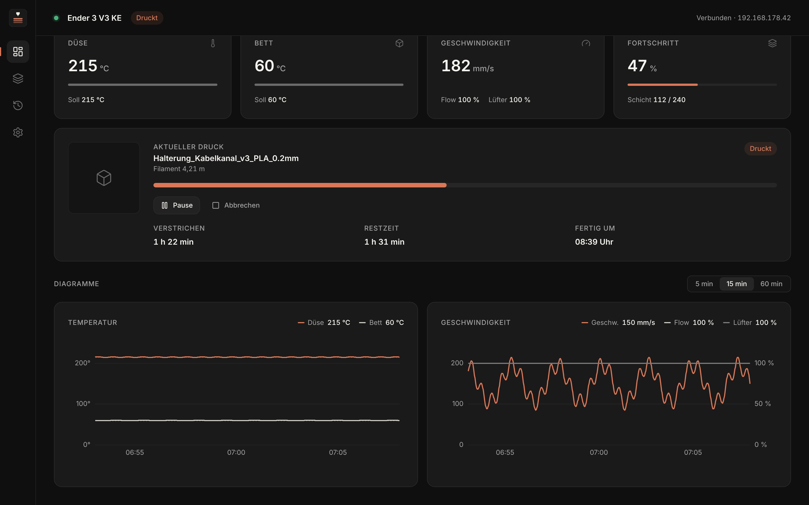
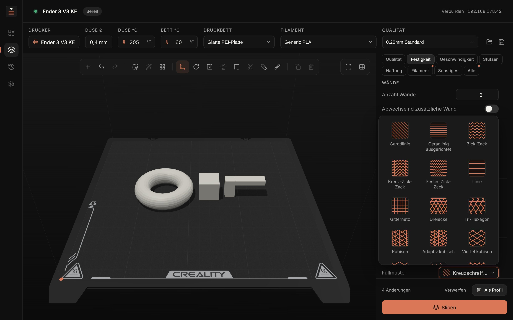
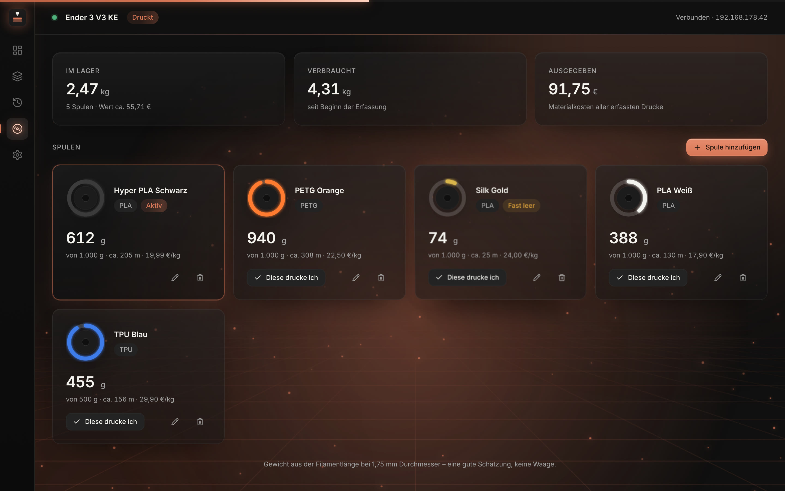

Dein Drucker.
In Ruhe im Blick.
Druckerwacht überwacht deinen Ender 3 V3 KE live über das WLAN, slict deine Modelle mit dem OrcaSlicer-Motor und schickt sie direkt an den Drucker – und steuert nebenbei auch K1-, Klipper-, OctoPrint- und Prusa-Drucker. Eine App für alles, klar und auf Deutsch oder Englisch.

Eine App. Alles, was dein KE braucht.
Überwachen, slicen, drucken – ein Rundgang durch Druckerwacht.





Du siehst, was auf dem Bett passiert. Jede Sekunde.
Temperaturen, Geschwindigkeit, Schicht und Restzeit kommen in Echtzeit vom Drucker. Die Zahlen gleiten weich in neue Werte, statt zu springen. Fällt die Verbindung weg, verbindet sich die App von selbst wieder.
-
Düse und Bett, Ist und SollMit Verlauf über 5, 15 oder 60 Minuten.
-
Restzeit und „Fertig um“Als echte Uhrzeit, nicht nur als Countdown.
-
Pause, Fortsetzen, AbbrechenAbbrechen fragt vorher nach. Während Heizen und Leveling bleibt Pause gesperrt.
-
Tempo live, von Flüster bis Turbo25 bis 150 % während des Drucks – leise in der Nacht, volle Leistung, wenn es schnell gehen muss.
-
BenachrichtigungenDruck fertig, Fehler am Drucker, Verbindung verloren.
-
Druckverlauf vom DruckerDie letzten 50 Drucke mit Dauer, Filament und Ergebnis, dazu die Gesamtwerte.

Slicen wie in Creality Print. Nur aufgeräumter.
Unter der Oberfläche rechnet der OrcaSlicer-Motor, dieselbe Grundlage, auf der auch Creality Print aufbaut. Die offiziellen Profile für den KE sind eingebaut. Deine Düsen- und Betttemperatur trägst du einmal oben ein, und sie gilt für jeden Druck.
Alle Einstellungen
563 Orca-Optionen auf Deutsch, mit Suche. Die wichtigsten sortiert wie in Creality Print.
Infill mit Vorschau
Alle 29 Füllmuster, jedes mit eigenem Bild. Von Gyroid bis Blitz.
Stützen und Naht malen
Stützen erzwingen oder blockieren, die Naht dorthin legen, wo sie nicht stört.
Rechteck-Auswahl
Wie auf dem Desktop: auf freier Fläche ziehen, mehrere Teile wählen und gemeinsam verschieben, drehen und skalieren.
Farbwechsel
Nach dem Slicen beliebige Schichten markieren – dort pausiert der Drucker für die neue Farbe. Mehrfarbig drucken mit einer Düse.
Direkt drucken
Hochladen und starten mit einem Klick. Vorher fragt die App, ob die Platte frei ist.

Wissen, was dein Druck kostet. Bevor er startet.
Trag deine Spulen einmal ein – Farbe, Material, Kilopreis. Ab dann behält Druckerwacht jedes Gramm, jeden Euro und jede Spule im Blick, die bald leer ist.

-
Jedes Gramm gezähltNach jedem Druck zieht Druckerwacht den Verbrauch automatisch von der aktiven Spule ab.
-
Kosten, bevor du druckstDer Druckdialog zeigt, was der Druck in Euro kostet – nach dem Kilopreis deiner Spule.
-
Gewarnt, bevor sie leer istReicht der Rest nicht für den Druck? Du erfährst es vor dem Start – nicht bei 80 % mitten in der Nacht.
-
Dein Lager im BlickKilo und Meter pro Spule, der Wert deines Lagers und was alle Drucke bisher gekostet haben.
Alle deine Drucker. Eine App.
Druckerwacht spricht jetzt Creality, Klipper, OctoPrint und Prusa – levelt dein Bett, kalibriert die Heizungen und bringt jeden Drucker aufs Handy.
Viele Drucker gleichzeitig
Creality KE und K1, jeder Klipper-Drucker (Voron, Sovol, Neptune 4, Qidi …), OctoPrint und Prusa über PrusaLink. Die Netzwerksuche findet sie alle.
Leveling & Kalibrieren
Bett-Leveling mit Speichern, PID-Kalibrierung, Vorheizen, Filament laden und Z-Offset während der ersten Schicht – alles in der neuen Werkzeug-Karte.
Handy im WLAN
QR-Code scannen und alle Drucker live im Handy-Browser sehen – mit Pause, Abbrechen, Tempo und Licht. Ganz ohne App.
Nachtmodus
Zwischen 22 und 7 Uhr druckt er automatisch leise mit 50 % – morgens geht es im gewohnten Tempo weiter.
Temperaturturm per Klick
Die App baut den Turm, schreibt den Temperaturwechsel in jeden Block und zeigt dir, welcher Block welche Temperatur hatte.
Wartung & Fehler in Klartext
Erinnert nach Druckstunden an Platte reinigen, Schienen schmieren und Riemen prüfen – und erklärt Druckerfehler verständlich.
Nochmal drucken
Der Lieblingsdruck noch einmal? Ein Klick im Verlauf – die App behält deine letzten 15 Drucke.
Statistik
Erfolgsquote, durchschnittliche Druckdauer und Druckstunden pro Woche auf einen Blick.
Sichern & Umziehen
Alle Drucker, Spulen und Wartungsstände in einer Datei – neuer Computer, alles wieder da.
Spricht die Sprache deines Druckers.
Kein Root, kein Umbau. Druckerwacht nutzt dieselbe lokale Schnittstelle wie Creality Print. Jedes Feld ist an einem echten Ender 3 V3 KE gemessen und als Test im Projekt hinterlegt.
| Live-Daten | ws://<IP>:9999 · nozzleTemp · bedTemp0 · printProgress · layer |
| Zustand | state 1 druckt · 5 pausiert · 2 fertig · withSelfTest 5→100 = Vorbereitung |
| Datei senden | POST /upload/<file>.gcode → /usr/data/printer_data/gcodes/ |
| Druck starten | {"method":"set","params":{"opGcodeFile":"printprt:…"}} |
| Pause / Abbrechen | {"pause":1} · {"pause":0} · {"stop":1} |
| Druckerverlauf | historyList · totalJob · totalUsageTime · totalUsageMaterial |
Frei. Offen. Für alle.
Druckerwacht kostet nichts und der komplette Quellcode liegt offen auf GitHub. Keine Werbung in der App, kein Konto, keine Cloud: Deine Daten bleiben in deinem Netz.
Offener Code
Lizenziert unter der AGPL-3.0. Lesen, verändern, weitergeben, und Verbesserungen bleiben für alle offen.
Weitere Drucker
Als Nächstes geplant: die Creality-K1-Reihe und Klipper-Drucker über Moonraker. Mitschnitte deines Druckers helfen dabei.
Mitmachen
Fehler gefunden oder eine Idee? Ein Issue auf GitHub genügt. Pull Requests sind herzlich willkommen.
In zwei Minuten startklar.
Herunterladen, installieren, im Netz nach dem Drucker suchen lassen. Die IP findest du alternativ am Druckerdisplay unter Einstellungen → Netzwerk.
Windows
- Die setup.exe laden und starten.
- Warnt SmartScreen, auf Weitere Informationen → Trotzdem ausführen klicken – die App ist noch nicht signiert.
Mac
- .dmg laden und Druckerwacht in Programme ziehen.
- Einmal freigeben, weil die App nicht bei Apple registriert ist:
xattr -dr com.apple.quarantine /Applications/Druckerwacht.app
Linux
- .deb laden und installieren, ein Update ersetzt die alte Version:
sudo apt install ./Druckerwacht_0.14.0_amd64.deb
- Starten über das Menü, Rechtsklick → Zur Kontrollleiste hinzufügen.
Für den Slicer wird zusätzlich der kostenlose OrcaSlicer gebraucht. Druckerwacht findet ihn automatisch im Ordner Programme bzw. unter ~/Applications. Alle Versionen und Änderungen findest du unter GitHub Releases.